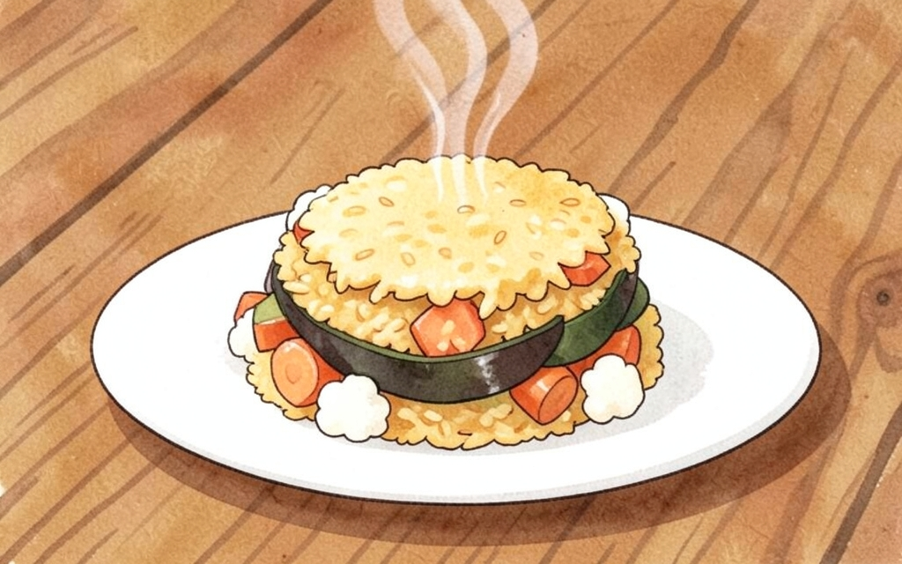
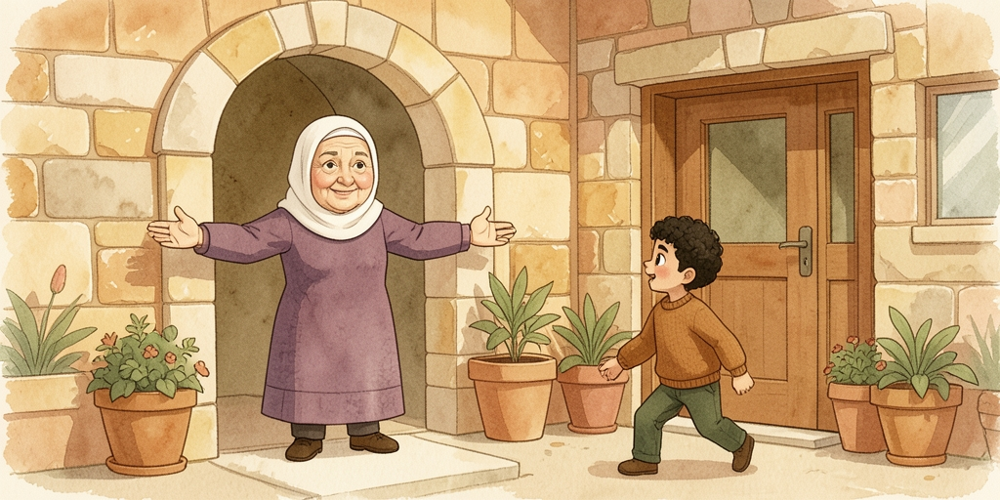
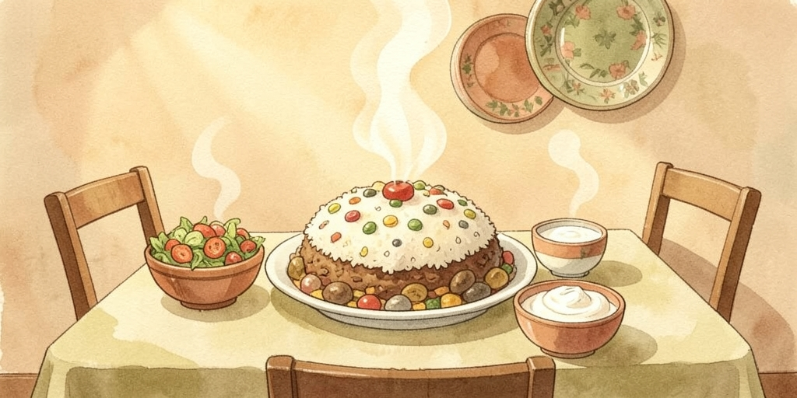
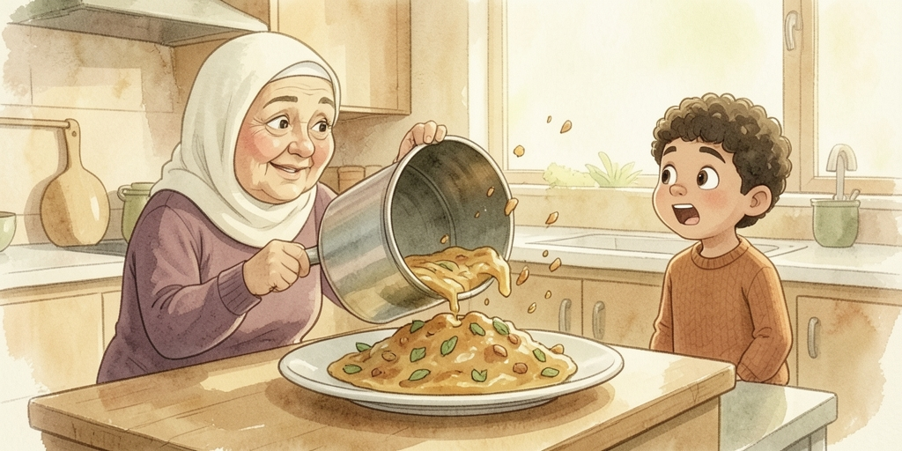
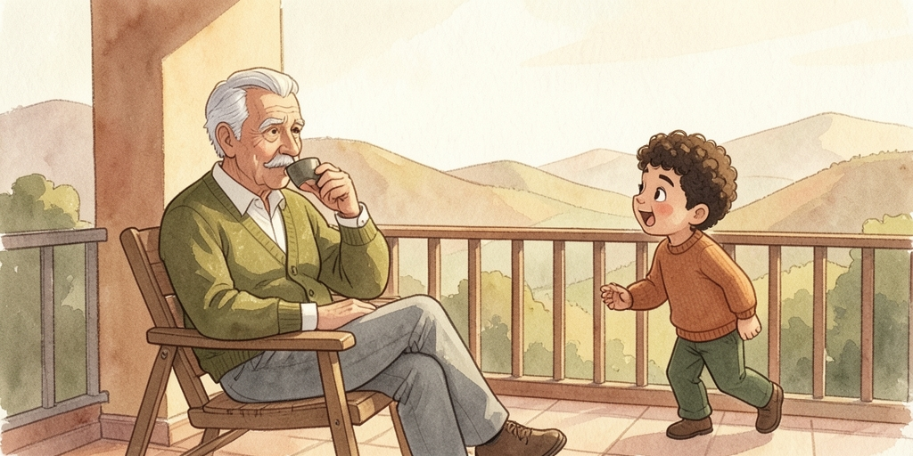
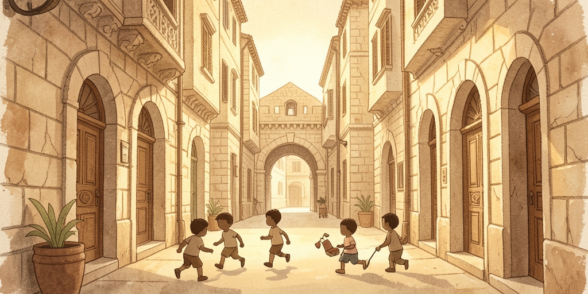
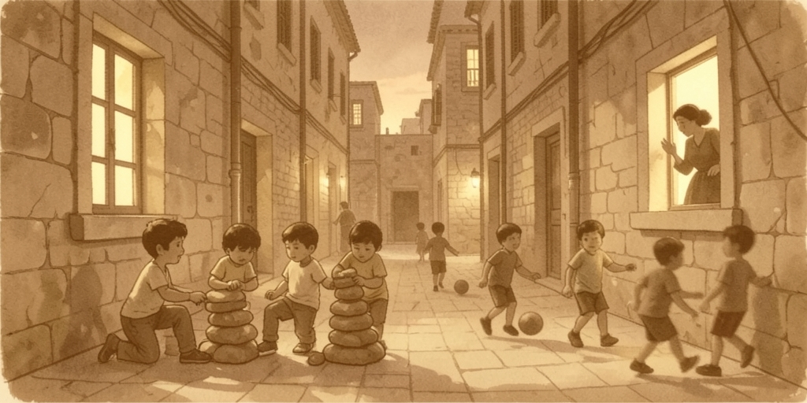
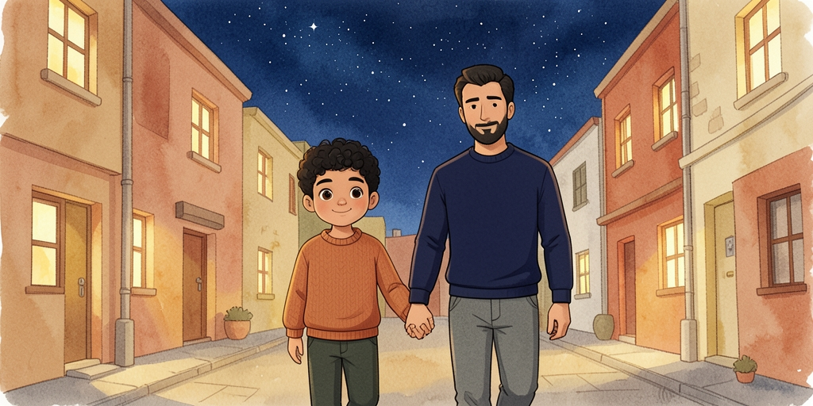

This one is about family, food, and an old man remembering. It is where you meet the past tense properly, plus the trick for saying "we used to".
| تيتا | Teta | grandma (not جدة) |
| سيدو | Seedo | grandpa (not جد) |
| إمي | immi | my mum · ماما maama |
| أبوي | abouy | my dad · بابا baaba |
| أخوي | a5ouy | my brother · أختي u5ti my sister |
| عمي / عمتي | 3ammi / 3ammti | dad's brother / dad's sister |
| خالي / خالتي | 5aali / 5aalti | mum's brother / mum's sister |
| العيلة | il-3eele | the family |
| الولاد | il-wlaad | the kids |

كل جمعة، عيلة سامي بتروح عند تيتا في بيت حنينا.
تيتا بتفتح الباب وبتقول:
«يا هلا! يا هلا! تفضلوا!»
Every Friday, Sami's family goes to Grandma's in Beit Hanina. Grandma opens the door and says: “Welcome! Welcome! Come in!”

ريحة المقلوبة بتملا البيت كله.
تيتا بتقول:
«اليوم عملتلكم مقلوبة، وسلطة، وشوية لبن.»
The smell of maqluba fills the whole house. Grandma says: “Today I've made you maqluba, salad, and a bit of yoghurt.”

«تيتا، ليش اسمها مقلوبة؟»
تيتا بتضحك وبتقول:
«لأنه منقلبها عالطبق يا سيدي! شوف!»
وبتقلب الطنجرة... طاخ!
“Grandma, why is it called maqluba?” Grandma laughs and says: “Because we flip it over onto the plate, my dear! Watch!” And she flips the pot... thud!

بعد الأكل، سيدو بيقعد عالبلكونة وبيشرب قهوة.
بيقول لسامي:
«تعال يا جدي، خليني احكيلك حكاية من زمان.»
After the meal, Grandpa sits out on the balcony and drinks coffee. He says to Sami: “Come here, my boy, let me tell you a story from the old days.”

«لما كنت زغير، ما كان في تلفزيون ولا موبايل.
كنا نلعب بالحارة لحد ما تصير الدنيا عتمة.»
سامي بيسأل:
«وشو كنتوا تلعبوا؟»
“When I was little, there was no TV and no mobile. We used to play out in the neighbourhood until it went dark.” Sami asks: “And what did you use to play?”

«كنا نلعب غميضة، وسبع حجار، وكرة.
وإمي كانت تنادي من الشباك:
يلا عالبيت! تأخرتوا!»
“We used to play hide-and-seek, seven stones, and football. And my mother would call from the window: Come on, get home! You're late!”

عالليل، وهم راجعين عالبيت، سامي قال لأبوه:
«بابا، بدي أروح عند تيتا كل يوم، مش بس يوم الجمعة.»
أبوه ضحك وقال:
«وبعدين مين رح يوكل المقلوبة كلها؟ إنت؟»
At night, on their way home, Sami said to his dad: “Dad, I want to go to Grandma's every day, not just on Friday.” His dad laughed and said: “And then who's going to eat that whole maqluba? You?”
Food, family, and the language of remembering.
| كل جمعة | kill jum3a | every Friday · الجمعة also = the week |
| عيلة | 3eele | family |
| بيت حنينا | Beet 7aneena | a Jerusalem neighbourhood |
| يا هلا | ya hala | welcome! · also أهلين ahlein |
| تفضلوا | tfaddalu | come in / help yourselves / after you |
| بتملا | btimla | it fills · ملا mala to fill |
| كله | killo | all of it · كلها killha all of it (f.) |
| مقلوبة | ma2loube | "upside-down" — rice, aubergine and meat |
| عملتلكم | 3amaltilkom | I made for you (pl.) |
| سلطة | salata | salad |
| شوية | shwayye | a little, a bit of |
| لبن | laban | yoghurt (in the Levant — not milk) |
| حليب | 7aleeb | milk — this is the word you want |
| ليش | leesh | why · لأنه la2inno because |
| منقلبها | mnu2libha | we flip it · قلب 2alab to turn over |
| الطبق | it-taba2 | the plate, the dish |
| يا سيدي | ya seedi | affectionate "my dear" (to a child or a friend) |
| الطنجرة | it-tanjara | the cooking pot |
| طاخ | taa5 | thud! bang! (sound word) |
| بعد الأكل | ba3d il-akel | after the meal · الأكل = food |
| بيقعد | byi23od | he sits (not يجلس) |
| البلكونة | il-balkone | the balcony |
| قهوة | 2ahwe | coffee · also = a café |
| خليني | 5alleeni | let me · خليك 5alleek stay / keep |
| احكيلك | a7keelak | I'll tell you |
| حكاية | 7ikaaye | a story, a tale |
| من زمان | min zamaan | from long ago · also "for ages" |
| لما | lamma | when (in a statement, never a question) |
| زغير | zgheer | small, young · كبير kbeer big, old |
| ولا | wala | nor, not even |
| كنا نلعب | kunna nil3ab | we used to play |
| الحارة | il-7aara | the neighbourhood, the lane |
| لحد ما | la7ad ma | until (+ verb) |
| تصير | tseer | it becomes · صار saar became, happened |
| عتمة | 3atme | darkness · الدنيا عتمة it's dark out |
| غميضة | ghmeeda | hide-and-seek |
| سبع حجار | sab3 7jaar | "seven stones" — the classic street game |
| كرة | koora | ball, football |
| تنادي | tnaadi | she calls out |
| تأخرتوا | t2a55artu | you (pl.) are late |
| عالليل | 3al-leel | at night · بالنهار bin-nhaar by day |
| راجعين | raj3een | going back (pl.) |
| مش بس | mish bass | not only |
| وبعدين | w-ba3deen | "and then?" — also "so what?" |
| يوكل | yokel | he eats · أكل akal he ate |
The past tense, and the one construction that lets you talk about your childhood.
Take the bare past stem — لعب li3ib, he played — and add:
| لعبت | li3ibt | I played / you (m.) played |
| لعبتي | li3ibti | you (f.) played |
| لعب | li3ib | he played |
| لعبت | li3bat | she played |
| لعبنا | li3ibna | we played |
| لعبتوا | li3ibtu | you (pl.) played |
| لعبوا | li3bu | they played |
No بـ in the past — that prefix belongs to the present only.
Put كان in front of a present-tense verb (drop the بـ) and you get the
habitual past — the tense of every childhood story:
كنت ألعب kunt al3ab I used to play · كنا نلعب kunna nil3ab we used to play ·
كانت تنادي kaanat tnaadi she would call.
Keep the بـ and it means something else: كنت بلعب kunt bal3ab — I was playing.
Palestinian has no present-tense "to be": أنا تعبان ana ta3baan — I'm tired.
To put it in the past, just add كان:
كنت تعبان kunt ta3baan I was tired · كان في kaan fee there was ·
ما كان في maa kaan fee there wasn't · كان عندي kaan 3indi I had.
| Word | |||
|---|---|---|---|
| لبن | laban | yoghurt, not milk — milk is حليب | |
| قهوة | 2ahwe | coffee, and also the café itself | |
| بس | bass | but / only / enough — from tone alone | |
| يعني | ya3ni | "I mean", "sort of" — the great filler word | |
| خلص | 5alas | done, that's it, fine, stop |